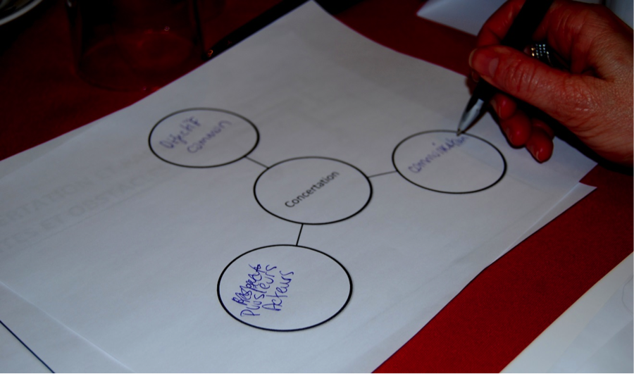
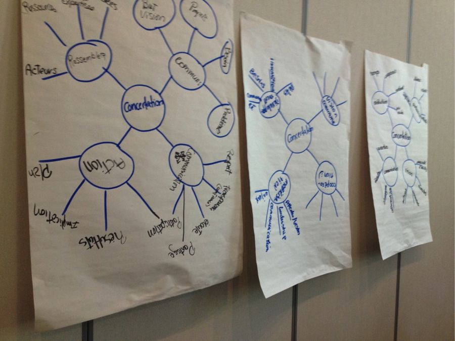

Buller!
Description sommaire
Il s’agit d’une activité qui permet à un groupe de dégager une compréhension commune d’une idée ou d’un concept à partir de la compréhension qu’en ont les participantes et participants au départ, et qui s’appuie sur des étapes simples et un visuel clair. On l’utilise généralement pour décortiquer des concepts fondamentaux dans une démarche collective (ex. : engagement, mobilisation, partenariat, gouvernance, planification stratégique, etc.).
 Objectif principal
Objectif principal
de l’outil
 Étapes du processus de
Étapes du processus de
planification collective
 Les incontournables pour une rencontre réussie
Les incontournables pour une rencontre réussie
 Prérequis
Prérequis
Aucun
 Matériel requis
Matériel requis
- Une grande feuille par sous-groupe de travail
- Des crayons-feutres
 Taille du groupe
Taille du groupe
Petit
2-10
Moyen
10-30
Grand
30-75
T-grand
75+
 Durée de l’animation
Durée de l’animation
30 à 50 minutes.
 La valeur ajoutée
La valeur ajoutée
Je fais souvent « buller » les participantes et participants en début de rencontre. Cela permet de réchauffer le groupe à travers une activité simple et stimulante. « Buller » permet de vérifier si le thème dont on va traiter a la même signification pour tout le monde. Cela permet donc d’éviter les multiples perceptions qui viennent ralentir la démarche.
François Gaudreault
Conseiller en développement collectif
 Préparation
Préparation
Préparez des grandes feuilles avec les bulles tracées. Le concept que l’on cherche à éclairer sera inscrit au centre.
On peut aussi prévoir de grandes feuilles vierges et laisser aux participantes et participants le soin de dessiner eux-mêmes leurs bulles.


 Déroulement de l’animation
Déroulement de l’animation
Étapes
1. Travail en sous-groupes (15 à 20 min)
- À partir de la grande feuille, en équipe de 5 à 6 personnes, les participantes et participants doivent s’entendre sur 4 ou 5 mots qui permettent de définir le mot central. Il ne faut pas trouver des mots qui sont des façons d’arriver au concept ou encore des conditions de succès. Il faut vraiment se concentrer sur la définition. À partir des 4 ou 5 premiers mots dégagés, ils doivent de nouveau s’entendre sur 4 mots qui définissent ces derniers.
2. Mise en commun (10 à 15 min)
-
Demandez à chaque équipe de présenter le résultat de son travail à tour de rôle.
3. Analyse et synthèse (5 à 15 min)
-
Invitez le groupe à analyser le résultat pour dégager une compréhension commune du concept. Exemples de questions :
-
Quels sont les mots-clés qui semblent les plus évocateurs et les plus rassembleurs? o Est-ce que les propositions des différents sous-groupes vont dans la même direction?
-
Y a-t-il des mots qui ne vont pas dans le même sens?
-
Sur quoi peut-on s’entendre collectivement pour la suite de nos travaux? ● Faites ressortir ce qui apparaît comme la compréhension commune et partagée.
-
 Pièges à éviter
Pièges à éviter
« Buller » ne remplace pas les nécessaires échanges autour d’un concept. Un des pièges de cet exercice est probablement d’escamoter l’étape d’analyse collective et ainsi se retrouver avec un « semblant » de compréhension partagée.
 Suggestions et variantes
Suggestions et variantes
Si vous disposez de peu de temps, vous pouvez vous limiter à ne faire ressortir que 4 à 5 mots-clés pour le concept central et ne pas « buller » une deuxième fois.
 Référence
Référence
Télécharger la version PDF de l'outil
Sans avoir une référence écrite, il faut souligner que cet exercice a été vécu par une personne de l’équipe il y a bien des années, exercice animé par Christian Jouin, animateur social à Grenoble en France. Il a été adapté par la suite.